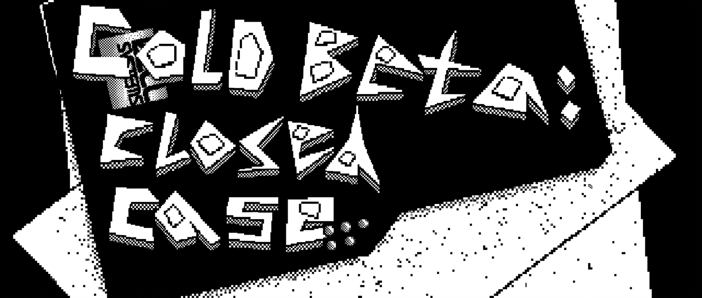
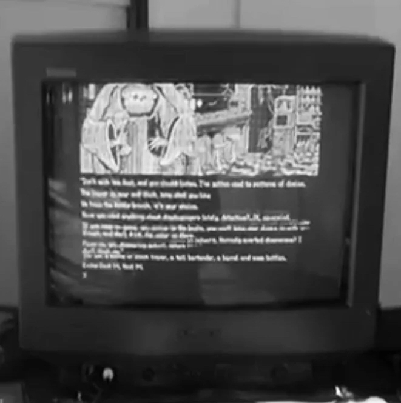
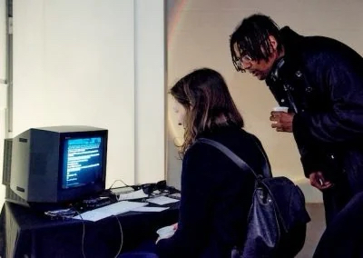
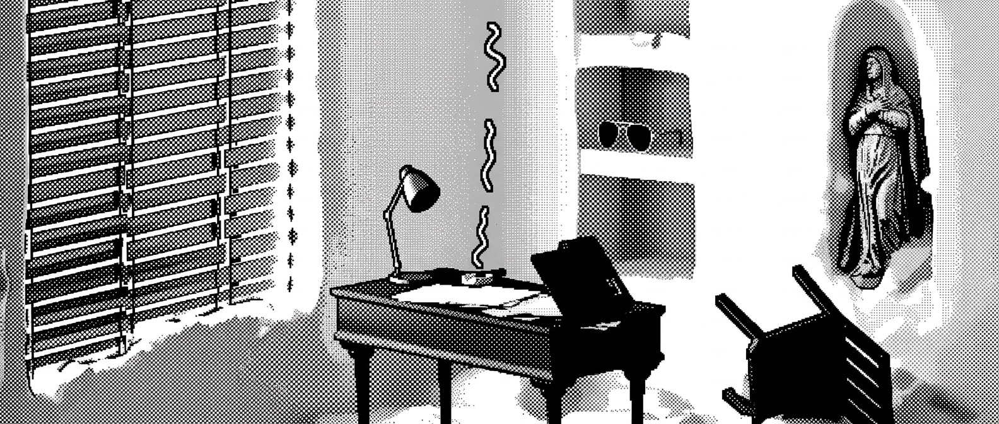
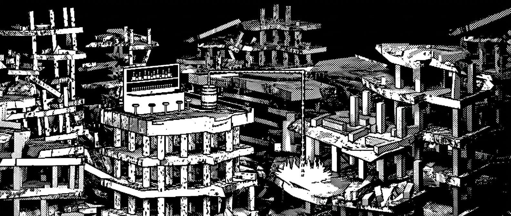
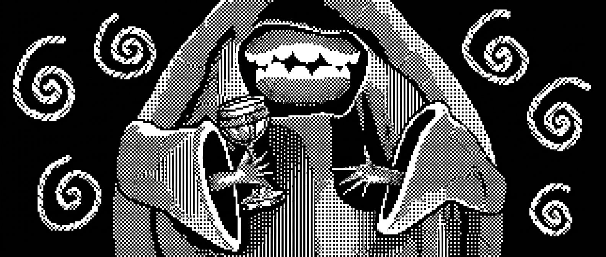
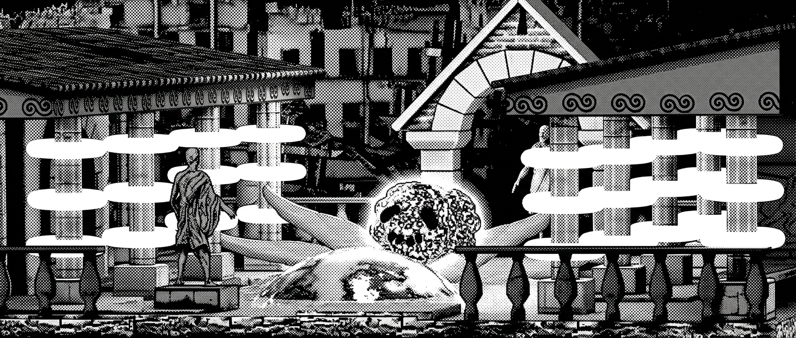
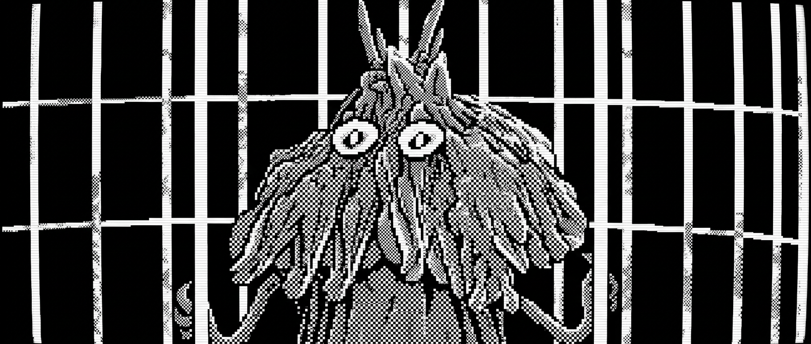
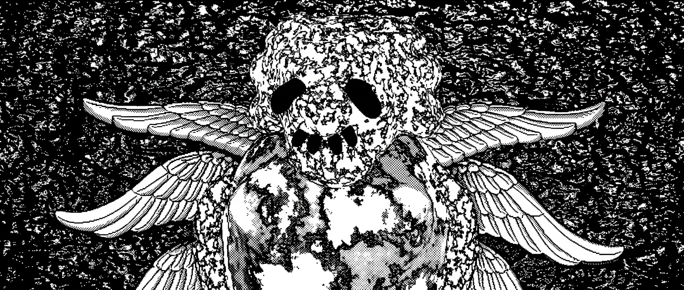
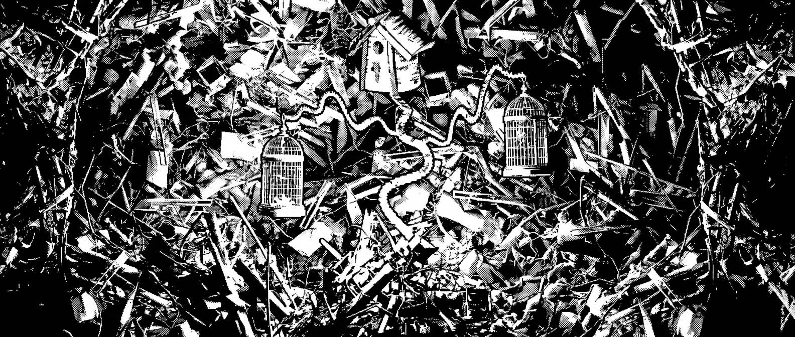

Cold Beta: Closed Case is a short graphic text adventure by Jim Osman, illustrated by Felixzzzone at Hypa Studios London, created for Coven LDN’s ARCADE immersive gaming exhibition. Inspired by 1980s adventures for the ZX Spectrum, the game combines parser-based interaction with surrealist prose, Bizarro fiction and detective fiction. Players investigate a decaying post-industrial landscape where cryptid humanoids, impossible architecture and occult technology blur the boundaries between procedural crime drama and dream logic. Through simple parser commands, players navigate a world where memory has become infrastructure and every object conceals another interpretation. The installation also featured a live cassette soundtrack that visitors could play alongside the game, with retro-inspired music composed by Andrew Page. Every command shapes the investigation, but curiosity can be fatal.








